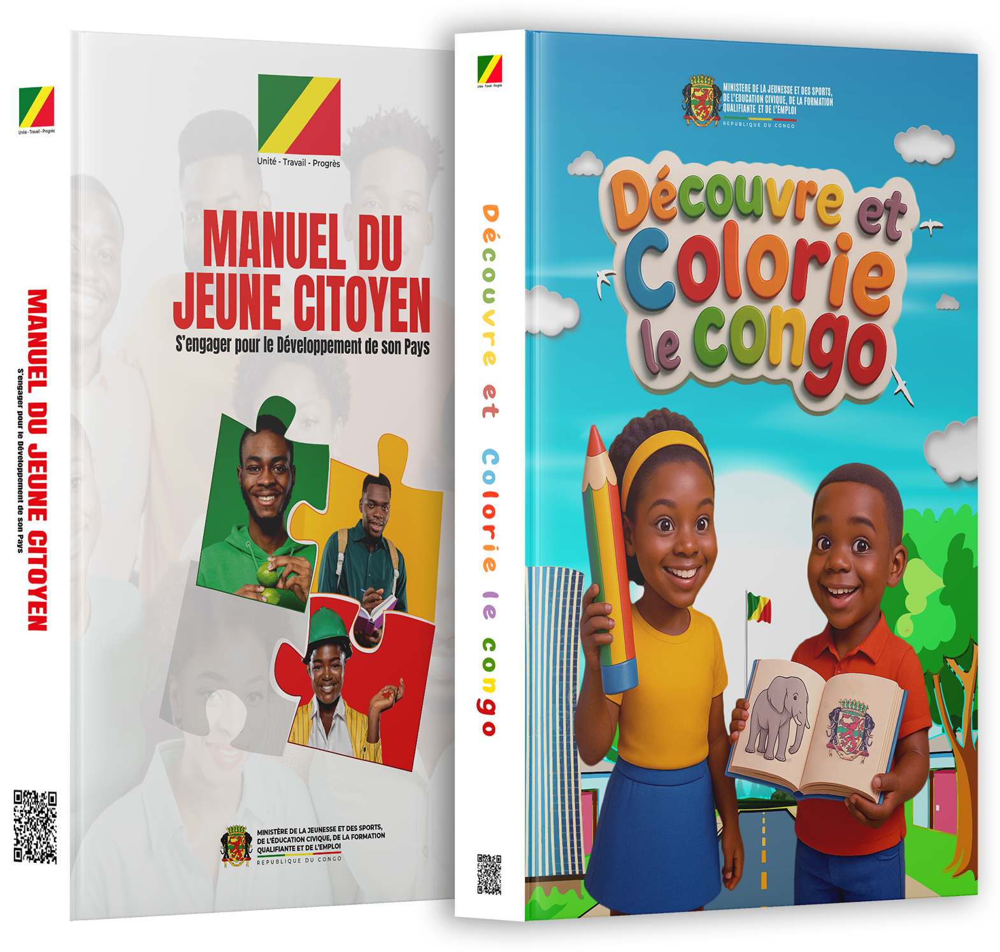

Les Manuels du
Jeune Citoyen
La plateforme officielle de consultation et de téléchargement des ouvrages de la Direction Générale de la Jeunesse de la République du Congo.
Destinés à renforcer le patriotisme et l'engagement citoyen, ces manuels constituent des outils de référence pour accompagner chaque jeune vers une citoyenneté responsable, active et engagée au service de la Nation.

Découvrez les ouvrages
Chaque manuel est disponible en version numérique, consultable page par page en ligne avec notre lecteur interactif, et téléchargeable gratuitement.
Les chiffres du portail
Totaux cumulés des deux ouvrages.
📚
2
Ouvrages disponibles
👁
0
Consultations
⬇
0
Téléchargements
Les Manuels du Jeune Citoyen ont été conçus pour accompagner la jeunesse congolaise dans la compréhension des principes fondamentaux de la citoyenneté.